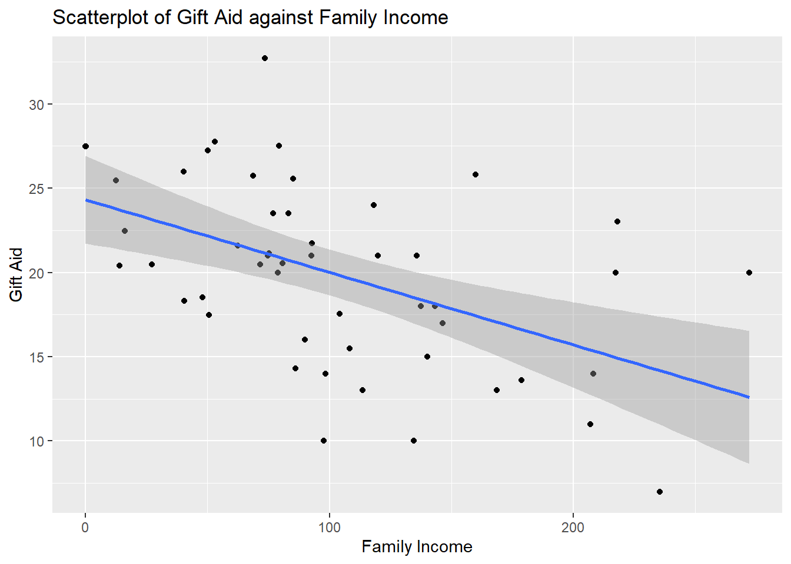
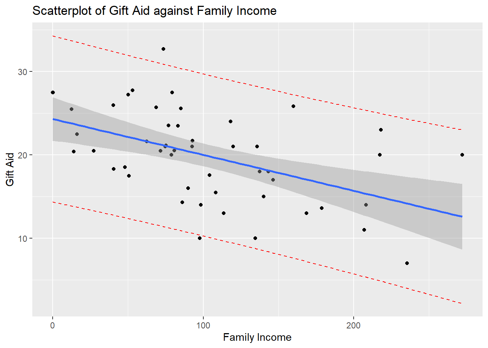

Module 4 Inference with Simple Linear Regression (SLR)
4.1 Introduction
Estimated slope and intercept will vary from sample to sample. In inferential statistics, we use hypothesis tests and confidence intervals to help quantify this variation. In this module, we learn how to account for and quantify random variation of estimated regression model, and how to interpret the model while accounting for random variation.
4.2 Hypothesis Testing in SLR
4.2.1 Distribution of Least Squares Estimators
Gauss Markov Theorem: Under assumptions for a regression model, the least squares estimators \(\hat{\beta_1}\) and \(\hat{\beta_0}\) are unbiased and have minimum variance among all unbiased linear estimators.
Thus the least squares estimators have the following properties:
- \(E(\hat{\beta_1})=\hat{\beta_1},E(\hat{\beta_0})=\hat{\beta_1}\)
Note: An estimator is unbiased if its expected value is exactly equal to the parameter it is estimating.
- The variance of \(\hat{\beta_1}\) is
\[\begin{equation} \text{Var}(\hat{\beta_1})=\frac{\sigma^2}{\sum{(x_i-\bar{x})^2}} \end{equation}\]
- The variance of \(\hat{\beta_0}\) is:
\[\begin{equation} \text{Var}(\hat{\beta_0})=\bar{x^2}\left[\frac{\sigma^2}{\sum{(x_i-\bar{x})^2}}\right] \end{equation}\]
- Both \(\hat{\beta_1}\) and \(\hat{\beta_1}\) follow a normal distribution.
Note that in the above equations, we use \(s^2=MS_{res}\) to estimate \(\sigma^2\) since it is an unknown value.
What these imply is that if we standardize \(\hat{\beta_1}\) and \(\hat{\beta_0}\), these standardized quantities will follow a \(t_{n-2}\) distribution, i.e.
\[\begin{equation} \frac{\hat{\beta_1-\beta_0}}{se(\hat{\beta_1)} ~ t_{n-2}}\text{ and } \frac{\hat{\beta_0-\beta_1}}{se(\hat{\beta_0)}} ~ t_{n-2} (\#tn2) \end{equation}\]
Note:
\(se(\hat{\beta_1}\) is read as the **standard error of \(\hat{\beta_1}\). The standard error of any estimator is essentially the sample standard deviation of that estimator, and measures the spread of that estimator.
A \(t_{n-2}\) distribution is read as a t distribution with \(n-2\) degrees of freedom.
4.2.2 Testing Regression Coefficients
Hypothesis testing is used to investigate if a population parameter is different from a specific value.
The general steps for hypothesis testing are:
State the null and alternative hypotheses.
A test statistic is calculated using the sample, assuming the null is true. The value of the test statistic measures how the sample deviates from the null
Make conclusion, using either critical values or p-values.
In the previous module, we introduced the ANOVA F test. In SLR, this tests if the slope of the SLR equation is 0 or not. It turns out that we can also perform a t test for the slope. In the t test for the slope, the null and alternative hypotheses are:
\[\begin{equation} H_0: \beta_1=0, H_a: \beta_1 \ne 0 \notag \end{equation}\]
The test statistic is:
\[\begin{equation} t=\frac{\hat{\beta_1}-\text{value in null}}{se(\hat{\beta_1})} \tag{4.1} \end{equation}\]
which is compared with a \(t_{n-2}\) distribution.
Let’s look at our simulated example that we saw in the last module. We have data from 6000 UVA undergrads on the amount of time they spend studying in a week (in minutes), and how many courses they are taking.
##create dataframe
df<-data.frame(study,courses)
##fit regression
result<-lm(study~courses, data=df)
##look at regression coefficients
summary(result)$coefficients## Estimate Std. Error t value Pr(>|t|)
## (Intercept) 58.44829 1.9218752 30.41211 4.652442e-189
## courses 120.39310 0.4707614 255.74125 0.000000e+00The t statistic for testing the null and alt. hypotheses is reported to be ~255.74, which can be calculated using Equation (4.1): \(t=\frac{120.39-0}{0.4707}\). The reported p-value is virtually zero, so we reject the null hypothesis. The data support the claim there is a linear association between study time and the number of courses taken.
4.3 Confidence Intervals for Regression Coefficients
Confidence intervals are similar to hypothesis testing in the sense that they are also based on the distributional properties of an estimator. CIs may differ in their use in the following ways:
We are not assessing if the parameter is different from a specific value.
We are more interested in exploring a plausible range of values for an unknown parameter.
Because CIs and hypothesis are based on the distributional properties of an estimator, their conclusions will be consistent (as long as the significance level is the same).
Recall the general form for CIs:
\[\begin{equation} \text{estimator}\pm(\text{multiplier}\times\text{s.e. of estimator}) \tag{4.2} \end{equation}\]
Components of a CI
estimator (or statistic): numerical quantity that describes a sample
multiplier: determined by confidence level and relevant probability distribution
standard error estimator: measure of variance of estimator (basically the square root of the variance of estimator)
Following Equations (4.2) and (??), the \(100(1-\alpha)\%\) CI for \(\beta_1\) is
\[\begin{equation} \hat{\beta_1} \pm t_{1-\alpha/2;n-2}se(\hat{\beta_1})=\hat{beta_1}\pm t_{1-\alpha/2;n-2}\frac{s}{\sqrt{\sum(x_i-\bar{x})^2}}\text{.} \tag{4.3} \end{equation}\]
For the study time example, the 95% CI for \(\beta_1\) is (119.47,121.31).
The interpretation is that we have 95% confidence that the true slope of \(\beta_1\) lies between (119.47,121.31). In other words, for each additional course taken, the predicted study time increases between 119.47 and 121.31 minutes.
4.3.1 Thought Questions
Is the conclusion from this 95% CI consistent with the hypothesis test for \(H_0: \beta_1 =0\) int he previous section at 0.05 significance level?
- Yes, they both show support for a linear association between study time and courses taken.
I have presented hypothesis tests for CIs for the slope, \(\beta_1\).
How would you calculate the t statistic if you wanted to test the null and alternative hypotheses for \(\beta_0\)?
- Use Equation #(eq:tn2) for \(\beta_0\) or read it off of the
interceptrow on the output ofsummary(result)$coefficientsabove.
- Use Equation #(eq:tn2) for \(\beta_0\) or read it off of the
Get the confidence interval?
Either use
confint(result,level=0.95)or use the following equation to calculate manually:
\[\begin{equation} \hat{\beta_0} \pm t_{1-\alpha/2;n-2}se(\hat{\beta_0})=\boxed{\hat{\beta_0}\pm t_{1-\alpha/2;n-2}s\sqrt{\frac{1}{n}+\frac{\bar{x^2}}{\sum(x_i-\bar{x})^2}}}\text{.} \tag{4.4} \end{equation}\]
Generally, we are more interested in the slope than the intercept.
4.4 CI of the Mean Response
We have established that the least squares estimators \(\hat{\beta_1}\),\(\hat{\beta_0}\) have their associated variances. Since the estimated SLR equation is
\[\begin{equation} \hat{y}=\hat{\beta_0}+\hat{\beta_1}x\text{,} \end{equation}\]
it stands to reason that \(\hat{y}\) has an associated variance as well, since it is a function of \(\hat{\beta_1}\),\(\hat{\beta_0}\).
There are two interpretations of \(\hat{y}\):
it estimates the mean of y when \(x=x_0\);
it predicts the value of y for a new observation when \(x=x_0\)
Note: \(x_0\) denotes a specific numerical value for the predictor variable.
Depending on which interpretation we watn, there are two different intervals based on \(\hat{y}\). The first is associated with the confidence interval for the mean response, \(\hat{\mu}_{y|x_0}\), given the predictor. This is used when we are interested in the average value of the response variable, when the predictor is equal to a specific value. This CI is
\[\begin{equation} \hat{\mu}_{y|x_0} \pm t_{1-\alpha/2;n-2}s\sqrt{\frac{1}{n}+\frac{(x_0-\bar{x})^2}{\sum(x_i-\bar{x})^2}} \tag{4.5} \end{equation}\]
For our study time example, suppose we want average study time for students who take 5 courses, the 95% CI is
##CI for mean y when x=5
newdata<-data.frame(courses=5)
predict(result, newdata, level=0.95, interval="confidence")95% confident that the average study time for students who take 5 courses is between 659.22 and 661.605 minutes.
4.5 Prediction Interval of a New Response
Previously, we found a CI for the mean of y given a specific value of x. This CI gives us an idea about the location of the regression line at a specific of x.
Instead, we may have interest in finding an interval for a new value of \(\hat{y_0}\), when we have a new observation \(x=x_0\). This is called a prediction interval (PI) for the future observation \(y_0\) when the predictor is a specific value. This interval follows from the second interpretation of \(\hat{y}\).
The PI for \(\hat{y}_0\) takes into account:
variation in location for the distribution of y (i.e. where is the center of the distribution of y?).
Variation within the probability distribution of y.
By comparison, the confidence interval for the mean response (4.5) only takes into account the first element. The PI is:
\[\begin{equation} $\hat{y}_0 \pm t_{1-\alpha/2;n-2}s\sqrt{1+\frac{1}{n}+\frac{(x_0-\bar{x})^2}{\sum(x_i-\bar{x})^2}}$ \tag{4.6} \end{equation}\]
Going back to our study time example, suppose we have a newly enrolled student who wishes to take 5 courses, and the student wants to predict his study time
We are 95% confident that the study time for this student is between 602.03 and 718.79 minutes.
4.5.1 Thought Questions
In the following two scenarios, decide if we are more interested in the CI for the mean response given the predictor (4.5), or the PI for a future response given the predictor (4.6).
We wish to estimate the waiting time, on average, of DMV customers if there are 10 people in line at the DMV
- a Confidence interval would be most useful
I enter the DMV and notice 10 people in line. I want to estimate my waiting time.
- prediction interval
Look at the standard errors associated with the intervals given in (4.5) and (4.6). How are they related to each other?
4.6 R Tutorial
4.6.1 Hypothesis Test for \(\beta_1\) (and \(\beta_0\))
##
## Call:
## lm(formula = gift_aid ~ family_income, data = Data)
##
## Residuals:
## Min 1Q Median 3Q Max
## -10.1128 -3.6234 -0.2161 3.1587 11.5707
##
## Coefficients:
## Estimate Std. Error t value Pr(>|t|)
## (Intercept) 24.31933 1.29145 18.831 < 2e-16 ***
## family_income -0.04307 0.01081 -3.985 0.000229 ***
## ---
## Signif. codes: 0 '***' 0.001 '**' 0.01 '*' 0.05 '.' 0.1 ' ' 1
##
## Residual standard error: 4.783 on 48 degrees of freedom
## Multiple R-squared: 0.2486, Adjusted R-squared: 0.2329
## F-statistic: 15.88 on 1 and 48 DF, p-value: 0.0002289Here we see that the results for our hypothesis tests for \(\beta_1\) and \(\beta_0\). For \(\beta_1\):
- \(\hat{\beta}_1 = -0.043\)
- \(se(\hat{\beta}_1) = 0.0108\)
- test statistic is \(t=-3.984\)
- corresponding p-value is 0.0002289
p value may be found using R
## [1] 0.0002285996or find critical value
## [1] 2.010635Either way we reject the null hypothesis, the data support the claim that there is a linear relationship between gift aid and family income.
4.6.2 Confidence Interval for \(\beta_1\) (and \(\beta_0\))
use confint() function:
## 2.5 % 97.5 %
## (Intercept) 21.72269421 26.91596380
## family_income -0.06480555 -0.0213377595% CI for \(\beta_1\) is (-0.064, -0.021). We are 95% confident that for each additional thousand dollars in family income, predicted gift aid decreases between $21.34 and $64.81.
4.6.3 Confidence Interval for Mean Response for Given x
Suppose we want a confidence interval for the average gift aid for Elmhurst College students with family income of 80 thousand dollars, use predict() function:
## fit lwr upr
## 1 20.8736 19.43366 22.31353We have 95% confidence the mean gift aid for students with family income of 80 thousand dollards is between $19,433.66 and $22,313.53.
4.6.4 Prediction Interval for a Response for a Given x
same problem as above, but for PI
## fit lwr upr
## 1 20.8736 11.15032 30.5968795% confidence that gift aid for student with family income of 80 thousand dollars is between $11,150.32 and $30,596.87.
4.6.5 Visualization of CI for Mean Response Given x and PI of Response Given x
Use geom_smooth(method=lm) in ggplot(). This shows the 95% CI by default, removed previously by adding se=FALSE inside geom_smooth():
##regular scatterplot
##with regression line overlaid, and bounds of CI for mean y
ggplot2::ggplot(Data, aes(x=family_income, y=gift_aid))+
geom_point() +
geom_smooth(method=lm)+
labs(x="Family Income",
y="Gift Aid",
title="Scatterplot of Gift Aid against Family Income")
overlaying the prediction interval requires some more work; need to compute lower and upper bounds of PI for each value of predictor first:
## Warning in predict.lm(result, interval = "prediction"): predictions on current data refer to _future_ responsesPreviously when we used the predict() function, we provided a numerical value of x to make a prediction on. If this is not supplied, the function will use all current values of x to make predictions, and will print out a warning message. For our purposes, this is not an issue since this is what we want.
Next we add preds to the data frame in order to overlay the lower and upper bounds on the scatterplot, by adding extra layers via geom_line() in the ggplot() function:
##add preds to data frame
Data<-data.frame(Data,preds)
##overlay PIs via geom_line()
ggplot2::ggplot(Data, aes(x=family_income, y=gift_aid))+
geom_point() +
geom_line(aes(y=lwr), color = "red", linetype = "dashed")+
geom_line(aes(y=upr), color = "red", linetype = "dashed")+
geom_smooth(method=lm)+
labs(x="Family Income",
y="Gift Aid",
title="Scatterplot of Gift Aid against Family Income")
As mentioned in the notes, the CI captures the location of the regression line, whereas the PI captures the data points.